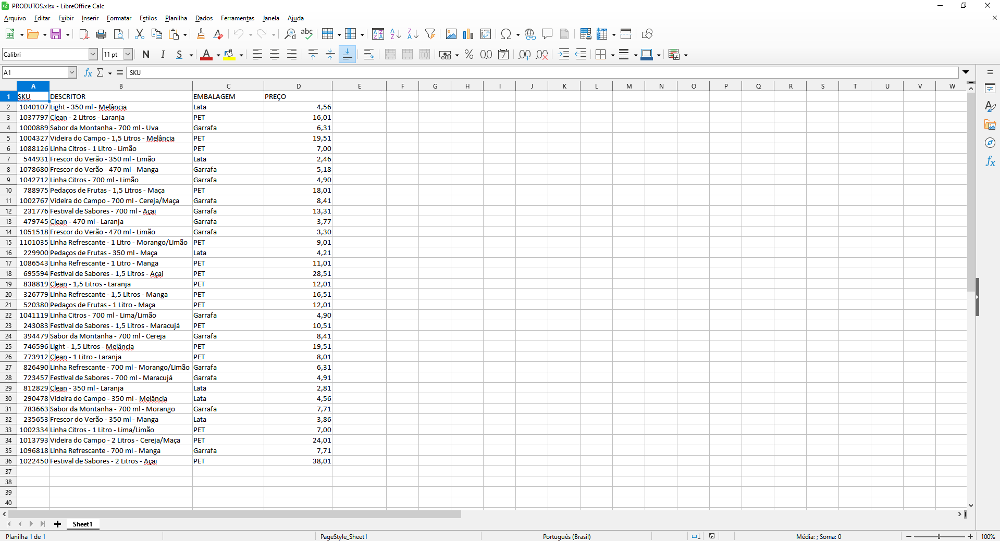
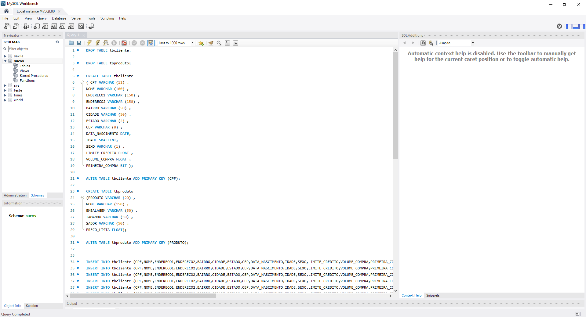

Projeto de MySQL como parte de conclusão do curso SQL com MySQL: manipule e consulte dados da Alura.
Neste projeto, foi elaborado um banco de dados para uma empresa de revenda de sucos, onde foram estudados os comandos básicos, criação de tabelas, filtros, etc.
Processo
Inicialmente, foi criado o banco de dados.
Em seguida, foi criada a tabela de clientes.
Planilha de produtos a ser inserida no banco de dados.
Foi criada a tebela de produtos com as respectivas colunas.
Foram inseridos os valores à tabela de produtos.
Comando para apresentar a tabela com os valores inseridos.
Foram inseridos mais produtos à tabela de produtos.
Foi utilizado o comando UPDATE para alterar os valores já existentes dos produtos.
Foi usado o comando DELETE para deletar um produto.
A coluna de id do produto foi transformada em PRIMARY KEY (valores únicos)
Foram inseridos mais produtos para o teste da PRIMARY KEY.

Foi comprovado que o programa não aceitou valores repetidos de ID.
Na tabela clientes, a coluna CPF foi transformada em chave primária e foi adicionada uma nova coluna.
Os valores dos clientes foram inseridos novamente com os valores da nova coluna.
Foi mostrada a nova tabela de clientes.
Ambas as tabelas foram recriadas e diversos valores foram adicionados.
Foi mostrada a nova tabela de clientes com diversos valores.
Teste de filtro (cpf e nome).
Teste de filtro (cpf e nome) com limite de 5 valores.
Teste de filtro (cpf e nome) com mudança de nome das colunas.
Teste de filtro para diversas colunas.
Uso do comando WHERE para substituir valores da coluna sabor.
Teste de filtro de idade.
Teste de filtro de idade para valores mais específicos.
Teste de filtro de idade com comando AND para especificar ainda mais.